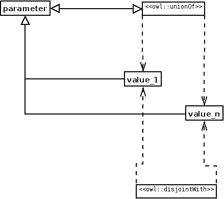
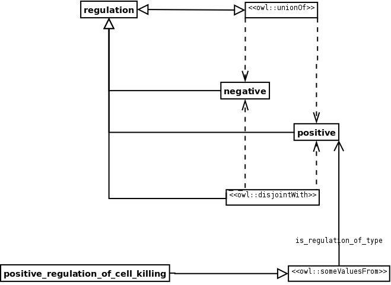

NAME: Value Partition.
ALSO KNOWN AS: Enumeration, if it is built using individuals instead of classes.
CLASSIFICATION: Good Practice.
MOTIVATION: Reality is full of attributes of elements. For example, a person can be defined as being short, medium or tall, and the attribute height can just get those values. Height is said to be covered or exhausted by those values; the possible heights are only those three. Biology is full of such situations: metabolism can only be anabolism or catabolism, membrane transport can only be uniport, sinport or antiport, regulation is always positive, negative, and so forth.
AIM: To model values of attributes. In this example we model biological regulation, being negative or positive. PositiveRegulationOfCellKilling, from GO, is linked to the appropriate value.
STRUCTURE:
SAMPLE:
ELEMENTS: The main elements are the classes that make up the Value Partition itself: a class for the attribute and the subclasses for the values. In this case, Regulation, Positive, and Negative, respectively. The most important relationship is the one that links each element of the knowledge domain with the values of the Value Partition. In this case, IsRegulationOfType (functional).
IMPLEMENTATION: Identify the attributes every element must be described with. For each attribute, create a class under Modifier (or the pertinent upper level distinction that it is used in the ontology). In each attribute class create a subclass for every value and make them disjoint. Create a covering axiom defining the attribute class. Create the restrictions pointing to the values of the Value Partition.
RESULT: The attributes and the elements that are described or modified by the attributes get untangled: whenever a new element enters the domain (e.g. another regulation phenomenon) it is only a matter of adding a restriction pointing to the pertinent Value Partition class. The values that can be given to a certain attribute are constrained, enforcing a better modelling.
ADDITIONAL INFORMATION: The Value Partition built with classes offers an advantage over the Enumeration (a Value Partition built with individuals): new subpartitions can be built for each of the value classes (e.g. very tall).
REFERENCES:
URL: http://odps.sourceforge.net/odp/owl/Good_Practice_ODP/Value_Partition.owl